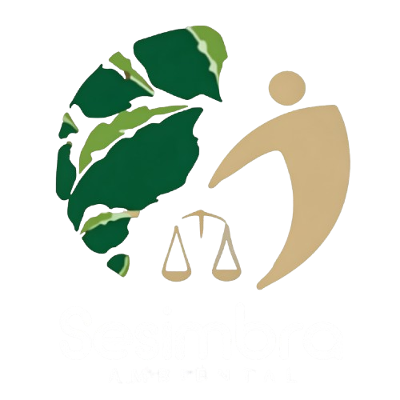

Mais de duas décadas atuando em processos ambientais.
Profissionais multidisciplinares com conhecimento técnico atualizado.
Atendimento em todas as etapas do processo ambiental.
Redução de riscos e conformidade com a legislação.
Cada cliente recebe atenção individualizada.
Atuamos promovendo o equilíbrio entre crescimento e preservação.
LP, LI, LO, LAS e demais modalidades.
CAR, adequações e regularizações.
EIA/RIMA, PCA, RAP, RCA e PRAD.
Mapeamento, georreferenciamento e cartografia.
PPRA, PCMSO, LTCAT e AET.
Atuação perante órgãos ambientais.
Recebeu uma multa ou auto de infração ambiental? Nossa equipe realiza análise técnica e administrativa, identificando oportunidades legais para defesa e recurso.
Entenda a importância do Cadastro Ambiental Rural.
Conheça as etapas do processo.
Saiba como funciona a defesa administrativa.